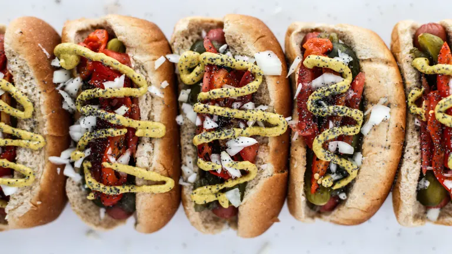

Recipe: Hades's Hot Dogs!

Only the spiciest of wieners!
Ingredients:
- Brats
- Poppy seed Buns
- Pickled Relish
- Sport Peppers
- Celery Salt
- Tomato Wedges
- Chopped Onions
- Pickle Spears
- Yellow Mustard (No Ketchup!)
Instructions:
- Place Brats on the stove in a skillet or in the air fryer.
- Toast the buns while the Bratts cook.
- Prep the condiments and fixins for the final stage.
- Place toasted buns on plate and top with Brats and all te fixins.
- Enjoy!